KRUGER NATIONAL PARK
Explore The Real Wild LifeExperience the ultimate African wilderness. Discover incredible landscapes and majestic wildlife in their natural habitat!
Explore Now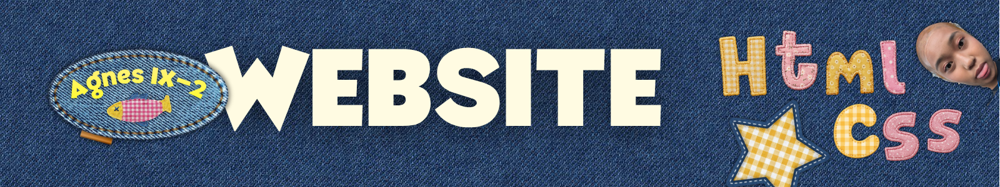
Experience the ultimate African wilderness. Discover incredible landscapes and majestic wildlife in their natural habitat!
Explore Now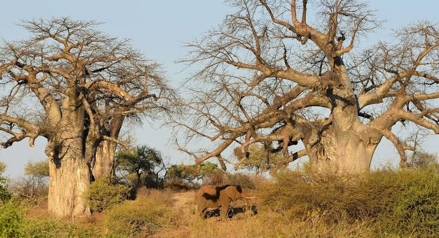
Established HeritageEstablished over a century ago, Kruger National Park stands as one of Africa's largest and most iconic game reserves. Highlighting an extraordinary density of wild animals, including the legendary Big Five—lions, leopards, elephants, rhinos, and buffalos—it offers an unprecedented glimpse into untouched ecosystems. Our expedition team was born out of a passionate commitment to conservation, historical preservation, and sustainable eco-tourism.
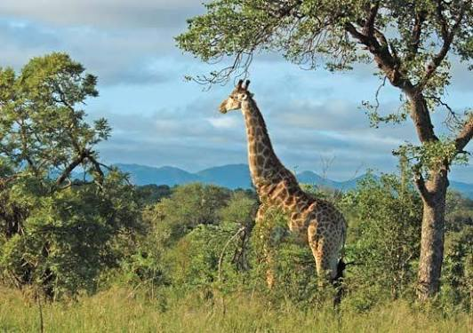
Protection & CareProtecting biodiversity is the heart of our daily operations across the savanna. Over the decades, rigorous anti-poaching initiatives and scientific habitat management have allowed endangered species to flourish within protected boundaries. By joining our guided expeditions, guests directly contribute to ongoing community educational programs and vital wildlife veterinary projects.
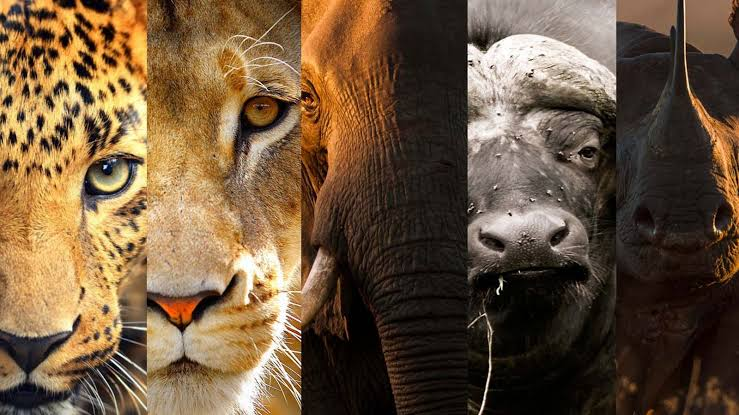
Unrivaled ExpeditionsStepping into this vast wilderness feels like traveling back in time. Every sunrise over the golden savanna brings a fresh chapter of raw wildlife encounters and breathtaking natural landscapes. Through generations of guiding explorers, photo crews, and nature enthusiasts across rugged terrains, we have refined the art of tracking animals while honoring their natural sanctuary borders.
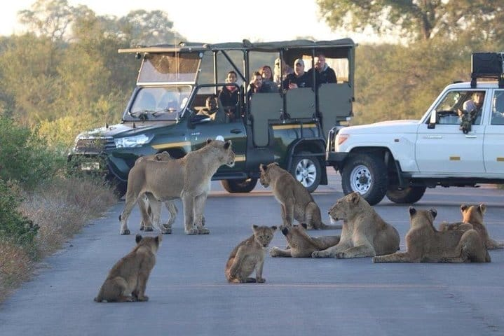
Expert GuidanceWhether you are navigating through dense bushveld or pausing near tranquil riverbanks, our experienced rangers share deep historical insights and native lore. Journeys through Kruger are not merely sightseeing vacations; they are immersive educational pilgrimages designed to foster a lifelong reverence for wildlife conservation and environmental harmony.
In the wild, sightings are never guaranteed! Click to reveal your safari luck today:
You have an extraordinary 85% Chance of encountering all Big Five species on your journey today!
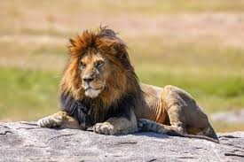
The undisputed king of the savannah, known for its majestic mane and powerful roar.
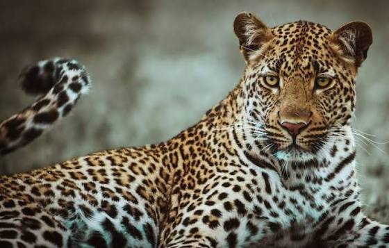
The elusive master of stealth and camouflage, capable of hauling heavy prey up trees.
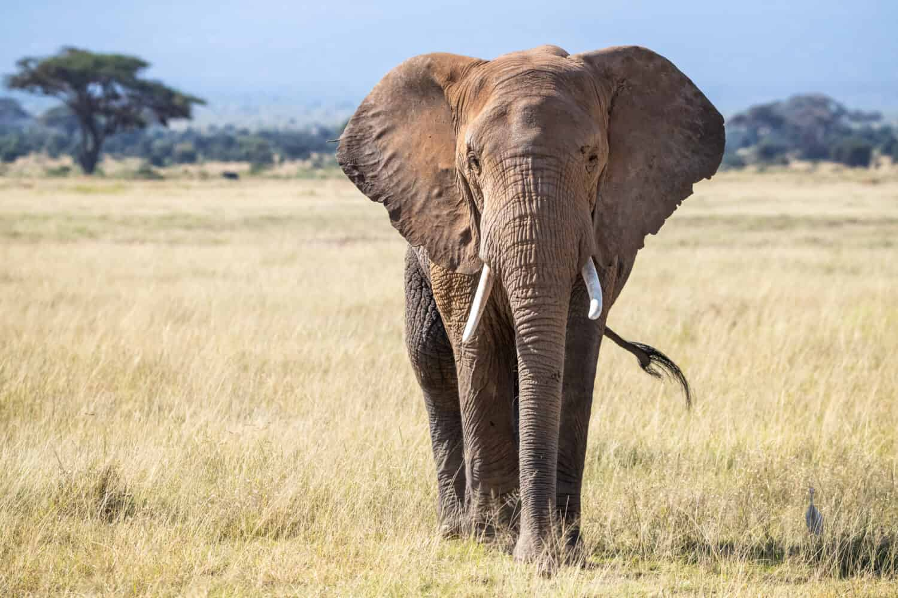
Gentle giants roaming in ancient herds, vital for maintaining savannah ecosystems.
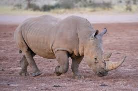
Powerful and armored guardians of the land with impressive prominent horns.
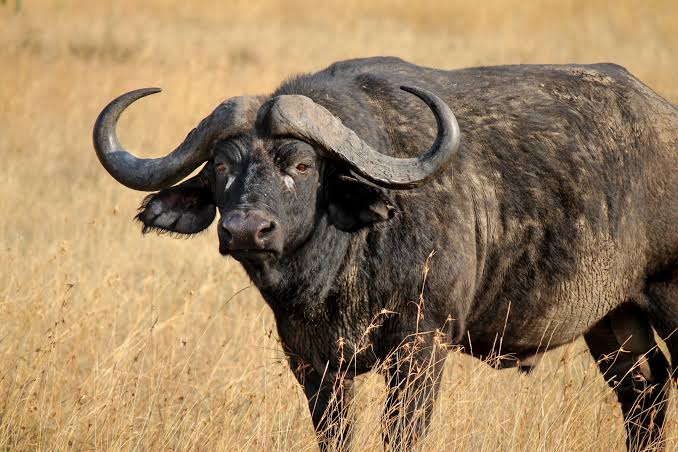
Unpredictable and formidable wilderness icons, renowned for their strength and group defense.
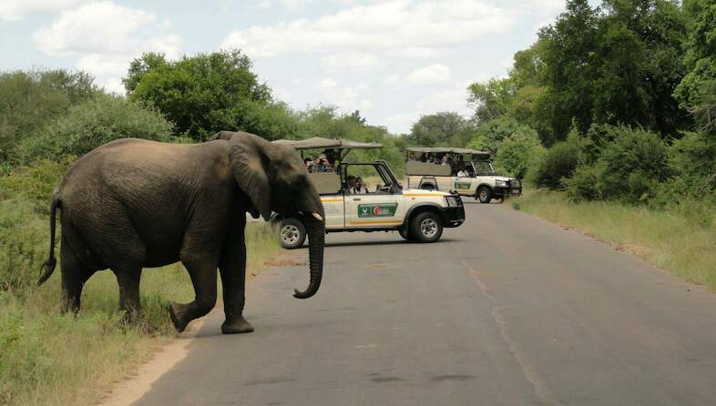
This 3 Day Quick Kruger Getaway Safari is ideal for those who are short on time but want a quality Kruger National Park safari experience with some extra sightseeing and an elephant interaction en route. Private guided full day safari in Kruger Park and guided scenic Panorama Route tour included.
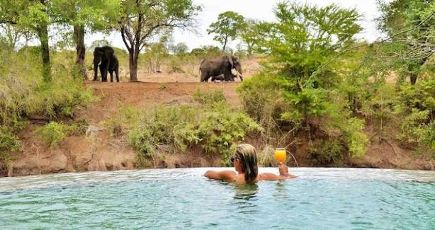
This Kruger Park safari package includes 2 nights at a luxury safari lodge inside the Kruger National Park. Indulge in a safari experience of a bygone era in one of Africa's legendary places, where wildlife is plentiful, and people are few.
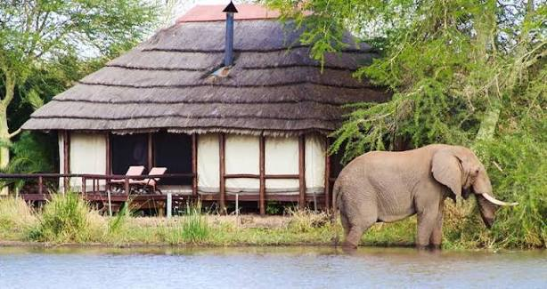
This 3-Day Tranquil Kruger Haven Safari is the perfect packaged safari for those looking to unwind in Kruger Park. Relax on a lounger overlooking a waterhole and enjoy fantastic game viewing without any effort and embark on leisurely game drives in search of the Big Five.
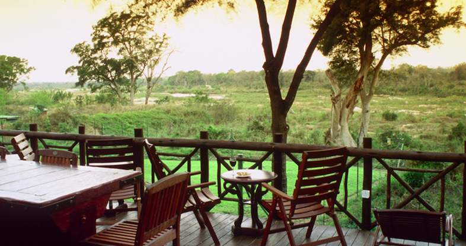
Enjoy a 4-Day Scenic Hotel Safari in Kruger with comfy hotel stays and Blyde River Canyon views. This 4-day Scenic Hotel Safari in Kruger with Panorama Route Tour is ideal if you who want to stay in a hotel-type setting but still want to do a guided Kruger Park wildlife safari and day tour of the Panorama Route.
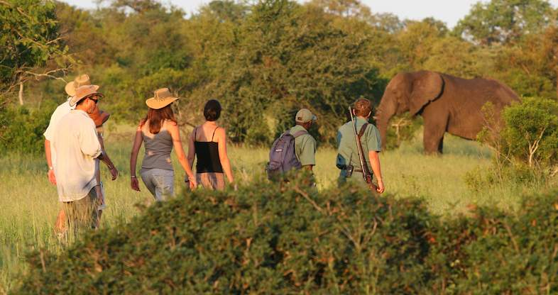
A walking safari in the Kruger National Park with an experienced guide is one of the most sought-after activities in Africa. Game drives in open safari vehicle combined with bush walks make this a unique Kruger Park safari experience. Not only do you get the Big Five safari experience but you also get to understand the rhythm of the Kruger on informative, leisurely paced walks.
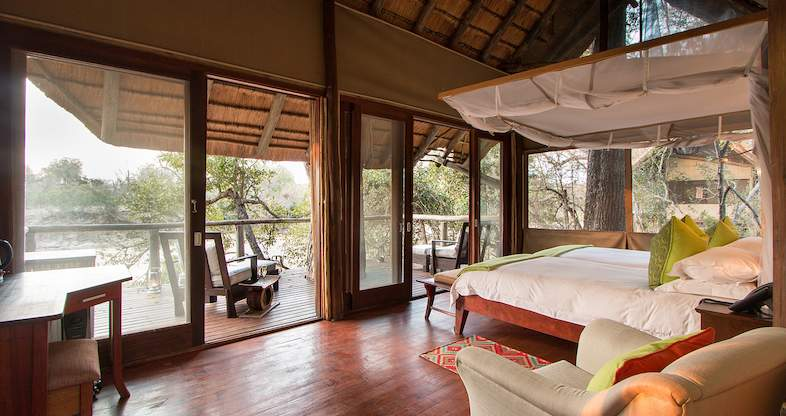
This 3-day affordable packaged Kruger Park Safari will be a balm for your soul. Wilderness, solitude and tranquillity in the rugged beauty of the Kruger National Park. Spot the Big 5 on thrilling game drives that finish with sundowner drinks in the bush.
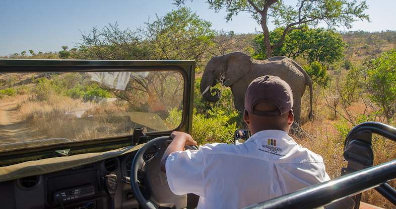
Take in the splendour and silence of the South African bush on a professionally guided walking safari on this Kruger Park vacation package. Enjoy exciting morning and evening game drives and elegant living at an intimate and secluded lodge with views over the Mpanamana River.
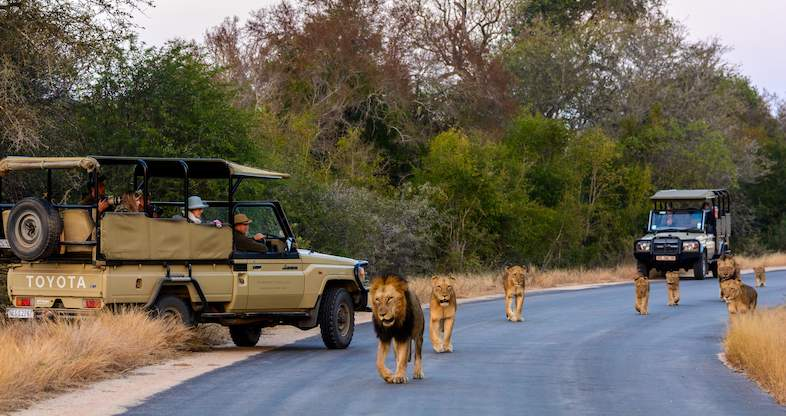
This 3-day environmentally-friendly safari package includes a stay at an eco Kruger Park Safari Lodge ensuring your footprint is limited. Embark on twice-daily game drives in open 4x4 safari vehicles, both on private gravel concession roads and Kruger National Park roads.
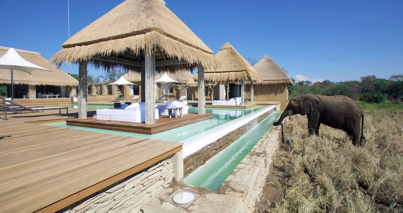
Looking to get away from it all and re-connect with your loved one? Take a moment and escape the crowds and relax in the African bush. Take a moment and spend 4 days on a relaxing Kruger Safari. Pamper yourself at a spectacular bush spa. Enjoy afternoon siestas and see wildlife gather at the waterhole while you lounge poolside.
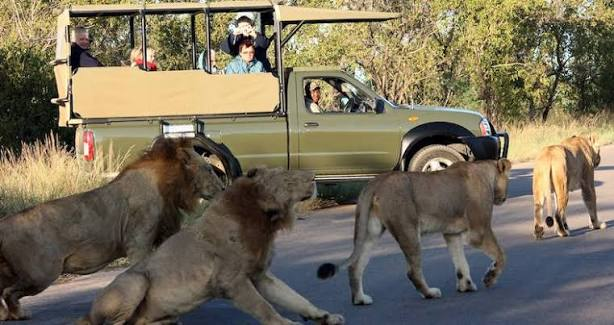
This 4-day getaway to Kruger is ideal for a family or group of friends wanting to unwind, relax and get away from it all while enjoying excellent food, scenery and activities. Set out and explore the regions famous attractions like the awe-inspiring Panorama Route and Kruger National Park. Embark on a private guided game drive through the Kruger National Park.
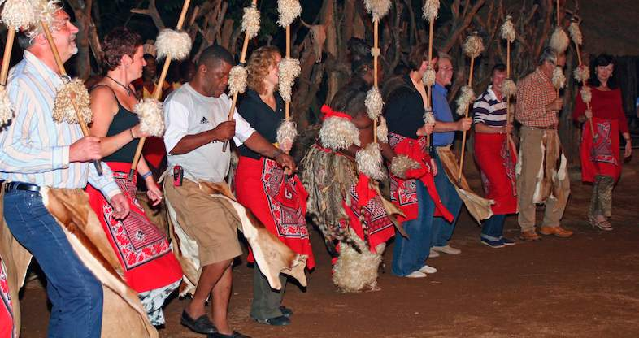
Spend 5 days on a Kruger Park safari that combines the diverse wildlife and traditional culture of the Kruger Park region. Interact with African elephants, share traditional meals and experience the authentic Shangaan culture. Embark on thrilling open safari vehicle game drives into the bushveld in search of African Big 5 wildlife.